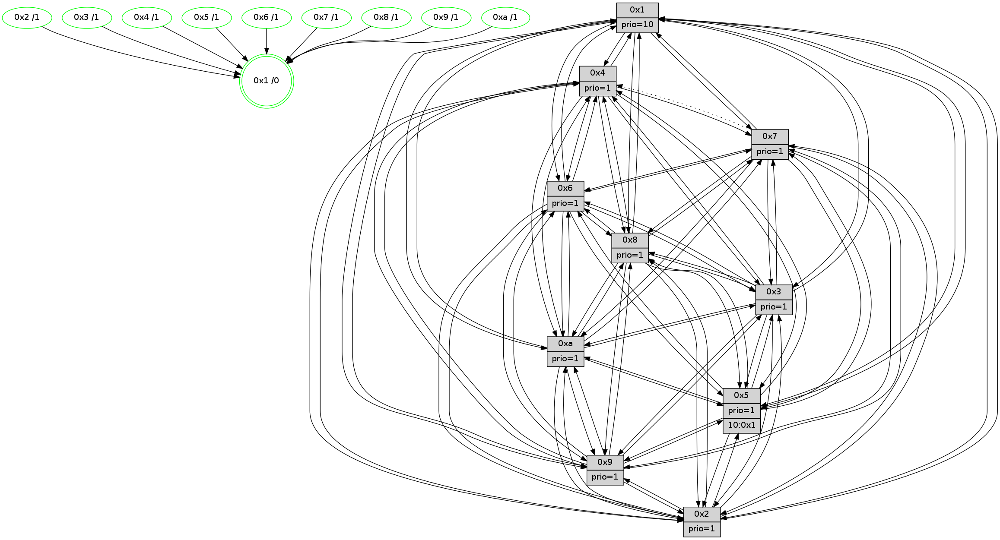

>> << IDX [start] -100 -25 -5 +0 +5 +25 +100 [1450.58958316]
 Previous packets
----------------------------------------------------------------------
1445.072665 beacon01(faad) #0 coord=01,02,03,04,05,06,07,0a,09,08 cycle=688.0ms assoc
-- color-indic=1 64 5d db
1445.082647 beacon02(faad) #0 coord=01,02,03,04,05,06,07,0a,09,08 cycle=688.0ms assoc 64 ce ea
1445.092646 beacon03(faad) #0 coord=01,02,03,04,05,06,07,0a,09,08 cycle=688.0ms assoc 64 b4 a7
1445.102648 beacon04(faad) #0 coord=01,02,03,04,05,06,07,0a,09,08 cycle=688.0ms assoc 64 c3 4d
1445.112647 beacon05(faad) #0 coord=01,02,03,04,05,06,07,0a,09,08 cycle=688.0ms assoc 64 b9 00
1445.122647 beacon06(faad) #0 coord=01,02,03,04,05,06,07,0a,09,08 cycle=688.0ms assoc 64 37 d7
1445.132649 beacon07(faad) #0 coord=01,02,03,04,05,06,07,0a,09,08 cycle=688.0ms assoc 64 4d 9a
1445.142652 beacon0a(faad) #0 coord=01,02,03,04,05,06,07,0a,09,08 cycle=688.0ms assoc 64 3c 91
1445.162653 beacon08(faad) #0 coord=01,02,03,04,05,06,07,0a,09,08 cycle=688.0ms assoc 64 c8 0b
1445.175482 [Hello(10): seq=854 sym=6,2,3,8,7,5,9,4,1 sysInfo=hasWarning stat=6:15,2,6,5/2:9,11,9,1/3:0,11,15,15/8:3,11,6,4/7:10,2,4,10/5:7,0,2,2/9:11,15,5,1/4:0,10,1,3/1:10,7,11,1]
1445.178197 [Color(1) seq=601 @0:0 prio=10]
1445.179563 [Hello(4): seq=921 sym=5,8,6,2,3,9,7,10,1 sysInfo= stat=5:4,11,13,3/8:0,2,2,0/6:13,4,7,1/2:9,5,15,2/3:12,0,8,15/9:1,9,3,2/7:0,1,0,0/10:4,0,8,14/1:2,11,15,1]
1445.184287 [Color(4) seq=460 @0:0 prio=1]
1445.186763 [Hello(9): seq=865 sym=2,5,3,4,7,6,8,10,1 sysInfo=hasWarning stat=2:14,8,5,12/5:1,15,5,9/3:11,12,1,5/4:10,7,13,3/7:8,0,12,5/6:14,14,3,0/8:8,15,12,7/10:0,8,7,0/1:10,5,14,1]
1445.189891 [Hello(7): seq=921 sym=2,3,5,6,8,9,10,1 asym=4 sysInfo=hasWarning stat=2:2,3,14,5/3:11,10,1,4/5:9,12,1,4/6:10,7,14,12/8:5,11,2,0/9:7,9,13,2/10:7,8,6,7/1:0,6,10,0/4:12,13,11,2]
1445.193746 [Color(7) seq=449 @0:0 prio=1]
1445.195007 [Hello(8): seq=865 sym=5,2,3,7,9,6,4,10,1 sysInfo=hasWarning stat=5:5,15,11,2/2:13,13,5,13/3:7,14,11,4/7:1,4,0,0/9:1,0,13,5/6:14,13,5,0/4:0,14,5,2/10:2,0,3,5/1:8,1,15,0]
1445.199736 [Color(8) seq=520 @0:0 prio=1]
----------------------------------------------------------------------
1445.860794 beacon01(faad) #0 coord=01,02,03,04,05,06,07,0a,09,08 cycle=688.0ms assoc
-- color-indic=1 64 69 c3
1445.870777 beacon02(faad) #0 coord=01,02,03,04,05,06,07,0a,09,08 cycle=688.0ms assoc 64 fa f2
1445.880776 beacon03(faad) #0 coord=01,02,03,04,05,06,07,0a,09,08 cycle=688.0ms assoc 64 80 bf
1445.890777 beacon04(faad) #0 coord=01,02,03,04,05,06,07,0a,09,08 cycle=688.0ms assoc 64 f7 55
1445.900777 beacon05(faad) #0 coord=01,02,03,04,05,06,07,0a,09,08 cycle=688.0ms assoc 64 8d 18
1445.910778 beacon06(faad) #0 coord=01,02,03,04,05,06,07,0a,09,08 cycle=688.0ms assoc 64 03 cf
1445.920779 beacon07(faad) #0 coord=01,02,03,04,05,06,07,0a,09,08 cycle=688.0ms assoc 64 79 82
1445.930782 beacon0a(faad) #0 coord=01,02,03,04,05,06,07,0a,09,08 cycle=688.0ms assoc 64 08 89
1445.950782 beacon08(faad) #0 coord=01,02,03,04,05,06,07,0a,09,08 cycle=688.0ms assoc 64 fc 13
1445.962335 [Hello(1): seq=831 sym=4,2,9,5,10,3,8,6,7 sysInfo=coloring-mode-on,ColoringModeRequestCalled stat=4:8,9,15,4/2:12,1,9,6/9:6,15,11,2/5:8,11,13,10/10:12,5,12,8/3:2,0,13,11/8:5,2,10,4/6:0,11,10,2/7:4,3,1,2]
1445.965937 [Color(9) seq=481 @0:0 prio=1]
1445.967393 [Hello(3): seq=922 sym=1,7,6,4,8,9,10,5 sysInfo=hasWarning stat=1:7,6,2,0/7:7,12,2,15/6:3,3,8,3/4:15,5,5,14/8:0,13,10,6/9:6,11,13,1/10:3,6,3,5/5:13,4,2,2]
1445.970077 [Color(3) seq=551 @0:0 prio=1]
1445.971363 [Hello(6): seq=922 sym=3,5,4,7,9,8,10,1 sysInfo=hasWarning stat=3:6,0,6,0/5:10,7,9,5/4:10,13,14,9/7:0,15,10,0/9:11,11,1,11/8:8,6,5,7/10:11,4,9,13/1:10,11,15,1]
1445.975018 [Color(6) seq=554 @0:0 prio=1]
1445.976714 [Hello(5): seq=922 sym=7,6,4,3,1,9,8,10,2 sysInfo=hasWarning stat=7:6,3,3,1/6:15,8,0,5/4:12,9,11,0/3:3,7,0,3/1:7,0,6,0/9:9,11,2,11/8:10,1,10,5/10:7,10,8,9/2:6,6,14,8]
1445.980482 [Color(5) seq=458 @0:0 prio=1]
1445.982749 [Color(10) seq=511 @0:0 prio=1]
1445.984655 [Hello(2): seq=918 sym=4,5,7,6,3,9,8,10,1 sysInfo=hasWarning stat=4:7,0,14,14/5:7,14,4,3/7:6,14,0,2/6:6,10,3,1/3:10,3,4,1/9:5,14,10,10/8:6,13,9,13/10:4,6,10,11/1:1,10,10,0]
1445.989708 [Color(2) seq=498 @0:0 prio=1]
----------------------------------------------------------------------
1446.648925 beacon01(faad) #0 coord=01,02,03,04,05,06,07,0a,09,08 cycle=688.0ms assoc
-- color-indic=1 64 d5 c6
1446.658907 beacon02(faad) #0 coord=01,02,03,04,05,06,07,0a,09,08 cycle=688.0ms assoc 64 46 f7
1446.668906 beacon03(faad) #0 coord=01,02,03,04,05,06,07,0a,09,08 cycle=688.0ms assoc 64 3c ba
1446.678907 beacon04(faad) #0 coord=01,02,03,04,05,06,07,0a,09,08 cycle=688.0ms assoc 64 4b 50
1446.688909 beacon05(faad) #0 coord=01,02,03,04,05,06,07,0a,09,08 cycle=688.0ms assoc 64 31 1d
1446.698908 beacon06(faad) #0 coord=01,02,03,04,05,06,07,0a,09,08 cycle=688.0ms assoc 64 bf ca
1446.708909 beacon07(faad) #0 coord=01,02,03,04,05,06,07,0a,09,08 cycle=688.0ms assoc 64 c5 87
1446.718913 beacon0a(faad) #0 coord=01,02,03,04,05,06,07,0a,09,08 cycle=688.0ms assoc 64 b4 8c
1446.738913 beacon08(faad) #0 coord=01,02,03,04,05,06,07,0a,09,08 cycle=688.0ms assoc 64 40 16
1446.752053 [Hello(10): seq=855 sym=6,2,3,8,7,5,9,4,1 sysInfo=hasWarning stat=6:15,2,6,5/2:10,12,9,1/3:0,11,15,15/8:4,12,6,4/7:11,3,4,10/5:7,0,2,2/9:12,15,5,1/4:1,11,1,3/1:11,8,11,1]
1446.754778 [Color(1) seq=602 @0:0 prio=10]
1446.756379 [Hello(4): seq=922 sym=5,8,6,2,3,9,7,10,1 sysInfo= stat=5:5,12,13,3/8:1,3,2,0/6:14,5,7,1/2:10,6,15,2/3:13,1,8,15/9:2,10,3,2/7:1,2,0,0/10:5,1,8,14/1:3,11,15,1]
1446.758877 [Hello(7): seq=922 sym=2,3,5,6,8,9,10,1 asym=4 sysInfo=hasWarning stat=2:3,4,14,5/3:12,11,1,4/5:10,13,1,4/6:11,8,14,12/8:6,12,2,0/9:7,10,13,2/10:8,9,6,7/1:1,6,10,0/4:12,13,11,2]
1446.763373 [Color(7) seq=450 @0:0 prio=1]
1446.767521 [Hello(8): seq=866 sym=5,2,3,7,9,6,4,10,1 sysInfo=hasWarning stat=5:6,0,11,2/2:14,14,5,13/3:8,15,11,4/7:1,4,0,0/9:1,1,13,5/6:15,14,5,0/4:0,14,5,2/10:3,1,3,5/1:9,1,15,0]
1446.770672 [Color(8) seq=521 @0:0 prio=1]
1446.773675 [Color(4) seq=461 @0:0 prio=1]
----------------------------------------------------------------------
1447.437056 beacon01(faad) #0 coord=01,02,03,04,05,06,07,0a,09,08 cycle=688.0ms assoc
-- color-indic=1 64 11 c8
1447.447038 beacon02(faad) #0 coord=01,02,03,04,05,06,07,0a,09,08 cycle=688.0ms assoc 64 82 f9
1447.457038 beacon03(faad) #0 coord=01,02,03,04,05,06,07,0a,09,08 cycle=688.0ms assoc 64 f8 b4
1447.467039 beacon04(faad) #0 coord=01,02,03,04,05,06,07,0a,09,08 cycle=688.0ms assoc 64 8f 5e
1447.477039 beacon05(faad) #0 coord=01,02,03,04,05,06,07,0a,09,08 cycle=688.0ms assoc 64 f5 13
1447.487038 beacon06(faad) #0 coord=01,02,03,04,05,06,07,0a,09,08 cycle=688.0ms assoc 64 7b c4
1447.497040 beacon07(faad) #0 coord=01,02,03,04,05,06,07,0a,09,08 cycle=688.0ms assoc 64 01 89
1447.507044 beacon0a(faad) #0 coord=01,02,03,04,05,06,07,0a,09,08 cycle=688.0ms assoc 64 70 82
1447.527044 beacon08(faad) #0 coord=01,02,03,04,05,06,07,0a,09,08 cycle=688.0ms assoc 64 84 18
1447.538254 [Hello(1): seq=832 sym=4,2,9,5,10,3,8,6,7 sysInfo=coloring-mode-on,ColoringModeRequestCalled stat=4:9,10,15,4/2:13,2,9,6/9:6,0,11,2/5:9,12,13,10/10:13,6,12,8/3:3,1,13,11/8:6,3,10,4/6:1,12,10,2/7:5,4,1,2]
1447.542508 [Hello(5): seq=923 sym=7,6,4,3,1,9,8,10,2 sysInfo=hasWarning stat=7:7,4,3,1/6:15,8,0,5/4:13,10,11,0/3:3,7,0,3/1:8,1,6,0/9:10,11,2,11/8:11,2,10,5/10:7,11,8,9/2:7,7,14,8]
1447.545342 [Color(5) seq=459 @0:0 prio=1]
1447.549155 [Color(10) seq=512 @0:0 prio=1]
1447.550466 [Color(3) seq=552 @0:0 prio=1]
1447.552704 [Color(9) seq=482 @0:0 prio=1]
1447.556429 [Hello(2): seq=919 sym=4,5,7,6,3,9,8,10,1 sysInfo=hasWarning stat=4:8,1,14,14/5:7,14,4,3/7:7,15,0,2/6:6,10,3,1/3:10,3,4,1/9:5,15,10,10/8:7,14,9,13/10:5,6,10,11/1:2,11,10,0]
1447.560029 [STC(1) #0.252 tree-change,inconsistent-stability,stable,to-color d=0]
1447.565770 [Color(2) seq=499 @0:0 prio=1]
1447.569551 [Color(6) seq=555 @0:0 prio=1]
----------------------------------------------------------------------
1448.225188 beacon01(faad) #0 coord=01,02,03,04,05,06,07,0a,09,08 cycle=688.0ms assoc
-- color-indic=1 64 ad cd
1448.235169 beacon02(faad) #0 coord=01,02,03,04,05,06,07,0a,09,08 cycle=688.0ms assoc 64 3e fc
1448.245170 beacon03(faad) #0 coord=01,02,03,04,05,06,07,0a,09,08 cycle=688.0ms assoc 64 44 b1
1448.255170 beacon04(faad) #0 coord=01,02,03,04,05,06,07,0a,09,08 cycle=688.0ms assoc 64 33 5b
1448.265171 beacon05(faad) #0 coord=01,02,03,04,05,06,07,0a,09,08 cycle=688.0ms assoc 64 49 16
1448.275171 beacon06(faad) #0 coord=01,02,03,04,05,06,07,0a,09,08 cycle=688.0ms assoc 64 c7 c1
1448.285170 beacon07(faad) #0 coord=01,02,03,04,05,06,07,0a,09,08 cycle=688.0ms assoc 64 bd 8c
1448.295176 beacon0a(faad) #0 coord=01,02,03,04,05,06,07,0a,09,08 cycle=688.0ms assoc 64 cc 87
1448.315176 beacon08(faad) #0 coord=01,02,03,04,05,06,07,0a,09,08 cycle=688.0ms assoc 64 38 1d
1448.326646 [Hello(10): seq=856 sym=6,2,3,8,7,5,9,4,1 sysInfo=hasWarning stat=6:15,3,6,5/2:11,13,9,1/3:0,12,15,15/8:5,13,6,4/7:12,4,4,10/5:7,0,2,2/9:12,0,5,1/4:2,12,1,3/1:12,9,12,1]
1448.331015 [Color(1) seq=603 @0:0 prio=10]
1448.335527 [Hello(9): seq=867 sym=2,5,3,4,7,6,8,10,1 sysInfo=hasWarning stat=2:0,10,5,12/5:2,0,5,9/3:12,13,1,5/4:11,8,13,3/7:10,2,12,5/6:15,0,3,0/8:10,1,12,7/10:0,9,7,0/1:12,6,15,1]
1448.338529 [STC(10)->1 #0.252 tree-change,inconsistent-stability,stable,to-color d=1]
1448.342698 [Hello(7): seq=923 sym=2,3,5,6,8,9,10,1 asym=4 sysInfo=hasWarning stat=2:4,5,14,5/3:12,12,1,4/5:11,14,1,4/6:12,9,14,12/8:7,13,2,0/9:7,11,13,2/10:9,10,6,7/1:2,6,11,0/4:12,14,11,2]
1448.345566 [STC(3)->1 #0.252 tree-change,inconsistent-stability,stable,to-color d=1]
1448.346846 [STC(7)->1 #0.252 tree-change,inconsistent-stability,stable,to-color d=1]
1448.350704 [Color(7) seq=451 @0:0 prio=1]
1448.354294 [STC(8)->1 #0.252 tree-change,inconsistent-stability,stable,to-color d=1]
1448.355932 [Color(8) seq=522 @0:0 prio=1]
1448.358136 [STC(4)->1 #0.252 tree-change,inconsistent-stability,stable,to-color d=1]
1448.360393 [Color(4) seq=462 @0:0 prio=1]
----------------------------------------------------------------------
1449.013322 beacon01(faad) #0 coord=01,02,03,04,05,06,07,0a,09,08 cycle=688.0ms assoc
-- color-indic=1 64 39 14
1449.023304 beacon02(faad) #0 coord=01,02,03,04,05,06,07,0a,09,08 cycle=688.0ms assoc 64 aa 25
1449.033305 beacon03(faad) #0 coord=01,02,03,04,05,06,07,0a,09,08 cycle=688.0ms assoc 64 d0 68
1449.043304 beacon04(faad) #0 coord=01,02,03,04,05,06,07,0a,09,08 cycle=688.0ms assoc 64 a7 82
1449.053306 beacon05(faad) #0 coord=01,02,03,04,05,06,07,0a,09,08 cycle=688.0ms assoc 64 dd cf
1449.063303 beacon06(faad) #0 coord=01,02,03,04,05,06,07,0a,09,08 cycle=688.0ms assoc 64 53 18
1449.073305 beacon07(faad) #0 coord=01,02,03,04,05,06,07,0a,09,08 cycle=688.0ms assoc 64 29 55
1449.083310 beacon0a(faad) #0 coord=01,02,03,04,05,06,07,0a,09,08 cycle=688.0ms assoc 64 58 5e
1449.103310 beacon08(faad) #0 coord=01,02,03,04,05,06,07,0a,09,08 cycle=688.0ms assoc 64 ac c4
1449.116177 [Hello(1): seq=833 sym=4,2,9,5,10,3,8,6,7 sysInfo=coloring-mode-on,ColoringModeRequestCalled stat=4:9,11,0,4/2:13,3,9,6/9:7,0,11,2/5:9,12,13,10/10:14,6,13,8/3:3,1,14,11/8:6,4,11,4/6:1,13,10,2/7:6,5,2,2]
1449.119277 [Hello(6): seq=924 sym=3,2,5,4,7,9,8,10,1 sysInfo=hasWarning stat=3:6,0,7,0/2:0,1,0,0/5:11,8,9,5/4:11,15,15,9/7:2,1,11,0/9:12,12,1,11/8:10,8,6,7/10:13,5,10,13/1:12,13,15,1]
1449.123365 [Color(6) seq=556 @0:0 prio=1]
1449.124795 [Color(9) seq=483 @0:0 prio=1]
1449.126071 [Hello(5): seq=924 sym=7,6,4,3,1,9,8,10,2 sysInfo=hasWarning stat=7:8,5,4,1/6:15,9,0,5/4:14,11,12,0/3:3,8,1,3/1:9,1,7,0/9:11,12,2,11/8:11,3,11,5/10:7,12,9,9/2:8,8,14,8]
1449.131114 [Color(5) seq=460 @0:0 prio=1 >10.@1,1.@2,1.@3,1.@4]
1449.132975 [Hello(2): seq=920 sym=4,5,7,6,3,9,8,10,1 sysInfo=hasWarning stat=4:9,2,15,14/5:7,14,4,3/7:8,0,1,2/6:6,11,3,1/3:10,3,5,1/9:6,15,10,10/8:7,15,10,13/10:6,6,11,11/1:3,12,10,0]
1449.135684 [Hello(3): seq=924 sym=1,7,6,2,4,8,9,10,5 sysInfo=hasWarning stat=1:9,7,3,0/7:8,14,3,15/6:4,5,8,3/2:1,2,0,0/4:0,7,6,14/8:1,15,11,6/9:6,13,13,1/10:4,7,3,5/5:14,5,2,2]
1449.138528 [Color(10) seq=513 @0:0 prio=1]
1449.140092 [Color(2) seq=500 @0:0 prio=1]
1449.145360 [Color(3) seq=553 @0:0 prio=1]
----------------------------------------------------------------------
1449.801452 beacon01(faad) #0 coord=01,02,03,04,05,06,07,0a,09,08 cycle=688.0ms assoc
-- color-indic=1 64 85 11
1449.811434 beacon02(faad) #0 coord=01,02,03,04,05,06,07,0a,09,08 cycle=688.0ms assoc 64 16 20
1449.821436 beacon03(faad) #0 coord=01,02,03,04,05,06,07,0a,09,08 cycle=688.0ms assoc 64 6c 6d
1449.831436 beacon04(faad) #0 coord=01,02,03,04,05,06,07,0a,09,08 cycle=688.0ms assoc 64 1b 87
1449.841435 beacon05(faad) #0 coord=01,02,03,04,05,06,07,0a,09,08 cycle=688.0ms assoc 64 61 ca
1449.851436 beacon06(faad) #0 coord=01,02,03,04,05,06,07,0a,09,08 cycle=688.0ms assoc 64 ef 1d
1449.861437 beacon07(faad) #0 coord=01,02,03,04,05,06,07,0a,09,08 cycle=688.0ms assoc 64 95 50
1449.871441 beacon0a(faad) #0 coord=01,02,03,04,05,06,07,0a,09,08 cycle=688.0ms assoc 64 e4 5b
1449.891440 beacon08(faad) #0 coord=01,02,03,04,05,06,07,0a,09,08 cycle=688.0ms assoc 64 10 c1
1449.902662 [Hello(10): seq=857 sym=6,2,3,8,7,5,9,4,1 sysInfo=hasWarning stat=6:15,3,6,5/2:11,14,9,1/3:0,13,0,15/8:5,14,7,4/7:13,5,5,10/5:7,0,2,2/9:12,0,6,1/4:2,13,2,3/1:13,9,12,1]
1449.907155 [Hello(7): seq=924 sym=2,3,5,6,8,9,10,1 asym=4 sysInfo=hasWarning stat=2:5,6,14,5/3:13,13,1,4/5:12,15,1,4/6:13,10,14,12/8:7,14,3,0/9:7,12,13,2/10:10,11,6,7/1:3,6,11,0/4:12,15,12,2]
1449.910050 [Color(7) seq=452 @0:0 prio=1]
1449.912127 [Hello(4): seq=924 sym=5,8,6,2,3,9,7,10,1 sysInfo= stat=5:7,14,13,3/8:1,3,2,0/6:0,7,7,1/2:12,8,15,2/3:14,3,8,15/9:3,12,3,2/7:1,2,0,0/10:6,3,8,14/1:5,11,0,1]
1449.915104 [Hello(8): seq=868 sym=5,2,3,7,9,6,4,10,1 sysInfo=hasWarning stat=5:8,2,11,2/2:0,0,5,13/3:9,1,11,4/7:1,4,0,0/9:2,3,13,5/6:0,0,5,0/4:0,0,6,2/10:4,3,3,5/1:11,1,0,0]
1449.918412 [Hello(9): seq=868 sym=2,5,3,4,7,6,8,10,1 sysInfo=hasWarning stat=2:1,11,5,12/5:3,1,5,9/3:13,14,2,5/4:11,9,14,3/7:11,3,13,5/6:15,0,3,0/8:10,2,13,7/10:0,10,7,0/1:13,6,15,1]
1449.920805 [Color(1) seq=604 @0:0 prio=10]
1449.926851 [Color(4) seq=463 @0:0 prio=1]
1449.928245 [Color(8) seq=523 @0:0 prio=1]